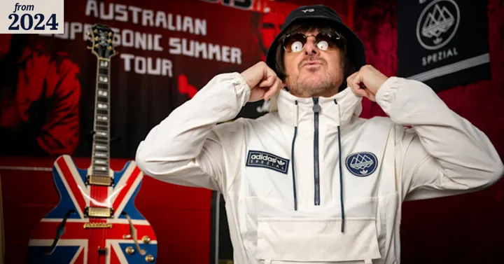
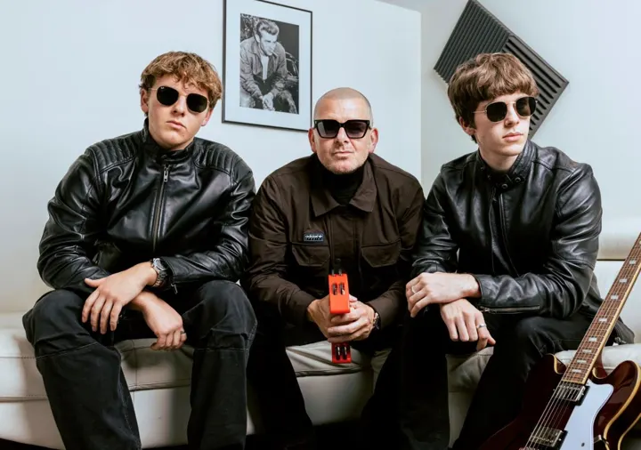
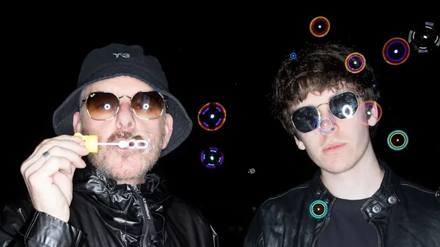
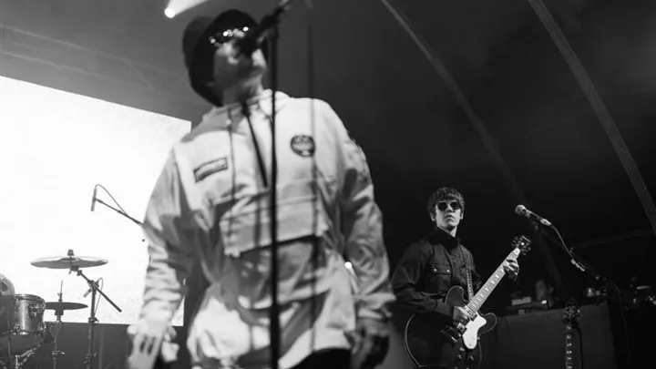

The Sydney Morning Herald
Music / Events
When the Oasis reunion was confirmed, Noasis (the tribute act to the British rock group) was ready for the headlines.
Real stories, linked to the original. Tap the deck page to enlarge.

The Sydney Morning Herald

Glam Adelaide
New Idea

The Sydney Morning Herald

Next case
Tell us the story. We’ll make it the one people can’t ignore.
Start the conversation →